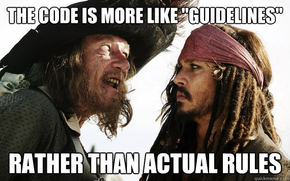

Macro Sourcery
Jakub Kozłowski - Scala Developer @ Scalac
Agenda
- Why && what
- Demo
- Conclusion
Who are you?
Why are we here?
To learn...
how to avoid writing boilerplate
how to avoid runtime overhead
how to add additional static checks
...with macros
What are macros?
Metaprogramming
Code that writes code
During the compilation
an annotation macro
used as an annotation
@typeclass trait Numeric[T]{
@op("+") def add(a: T, b: T): T
}
e.g. adds methods, typeclass helpers
currently only with macro-paradise
a def macro
used as a function
val result = cached (15.minutes) {
expensiveCall(args)
}
can transform its arguments' ASTs
Abstract Syntax Trees
Syntax representation in compilers
Abstract, independent of grammar
Example

println("hello, world")
Avoiding boilerplate
JSON (by hand)
case class Person(name: String, age: Int, hometown: String){
def toJson = JsonObject(
"name" -> name,
"age" -> age.toString,
"hometown" -> hometown
)
}
object Person{
def fromJson(json: JsonObject) = Person(json[String]("name"), ...)
}
val person = Person("Joe", 26, "NYC")
val personJson = person.toJson
//...
val person2 = Person.fromJson(personJson)
JSON (with macros)
val person = Person("Joe", 26, "NYC")
val personJson = person.toJson
//...
val person2 = personJson.convertTo[Person]
That's all (with the right macro-based library)
Deep update (by hand)
//given these classes...
case class Address(street: String, city: String, postcode: String)
case class Person(name: String, age: Int, address: Address)
//update person's address's street
val person = Person("Joe", 18, Address("Long", "NYC", "99999"))
//omg
val newPerson =
person.copy(
address = person.address.copy(
street = person.address.street + " st."
)
)

We don't want that
Solution?
Use Lens (e.g. from shapeless)
Deep update (with macros)
//given these classes...
case class Address(street: String, city: String, postcode: String)
case class Person(name: String, age: Int, address: Address)
//update person's address's street
val person = Person("Joe", 18, Address("Long", "NYC", "99999"))
import shapeless._val streetLens = lens[Person].address.streetval newPerson = streetLens.modify(person)(_ + " st.")Avoiding runtime overhead
Creating generic array of elements
Without macros
def createArray[T: ClassTag](size: Int, el: T) = {
val a = new Array[T](size)
for (i <- 0 until size) a(i) = el
a
}
Uses boxing
You can make use of specialization...
def createArray[@specialized T: ClassTag](size: Int, el: T) = {
val a = new Array[T](size)
for (i <- 0 until size) a(i) = el
a
}
...which is viral and heavyweight
Manual primitive type handling
def createArray[T: ClassTag](size: Int, el: T) = {
val a = new Array[T](size)
def specBody[@specialized U](ell: U) {
for (i <- 0 until size) a.asInstanceOf[Array[U]](i) = ell
}
classTag[T] match {
case ClassTag.Int => specBody(el.asInstanceOf[Int])
...
}
a
}
boilerplate!!!!111
With macros
def specialized[T: ClassTag](code: Any) = macro ...
def createArray[T: ClassTag](size: Int, el: T) = {
val a = new Array[T](size)
specialized[T] {
for (i <- 0 until size) a(i) = el
}
a
}
Generates specialized code...
without specializing the whole call chain
Adding additional static checks
Unsafe behavior
What's wrong with this code?
def future[T](body: => T) = ...
def receive = {
case Request(data) =>
future {
val result = transform(data)
sender ! Response(result)
}
}
Sender can change
Additional checks with macros
def future[T](body: Spore[T]) = ...
def spore[T](body: => T): Spore[T] = macro ...
def receive = {
case Request(data) =>
//here
future(spore {
val result = transform(data)
sender ! Response(result) // won't compile
})
}
The spore macro will analyze free variables
and fail on suspicious behavior
Agenda
Why && what✓- Demo
- Conclusion
Setup
"org.scala-lang" % "scala-reflect" % "2.11.8"
Compile first, use later
import scala.reflect.macros.blackbox (or whitebox)
a compiler plugin if using macro paradise
Compile before use
Macros need to be compiled before you use them
e.g.
sbt console- sbt subprojects
- external module in IDE
- build jar and import
Blackbox vs whitebox
blackbox - returned type is exactly as declared
whitebox - can return a type more specific than declared
Simple macro
def hello: Unit = macro helloImpl
def helloImpl(c: blackbox.Context): c.Expr[Unit] = {
import c.universe._
reify {
println("hello!")
}
}
Let's code
Write a macro that transforms a function
into its derivative
f(x) = -2(x2 + 4x - 5)
derive(f) = f'(x) = -4x - 8
Agenda
Why && what✓Demo✓- Conclusion
The bad parts
opportunity for writing cryptic code
basically (type-safe) code generation
still code - potential bugs
compilation overhead
not trivial to debug
The good parts
Trivial client usage
Not rocket science
The future
macros will be dropped
replaced by scala.meta
easier to write macros
better tooling support (e.g. IDEs)
no whitebox macros
code rewriting in Dotty
Should you use macros?
Yes, certainly
Should you write your own?
only when you absolutely need to
Summary
We've learned:
what macros are
how they help
how they don't
how to write them
Links
Thank you!
Questions!
Slides: kubukoz.github.io/macro-sourcery-slides
Code: github.com/kubukoz/macro-sourcery-code
Contact me: